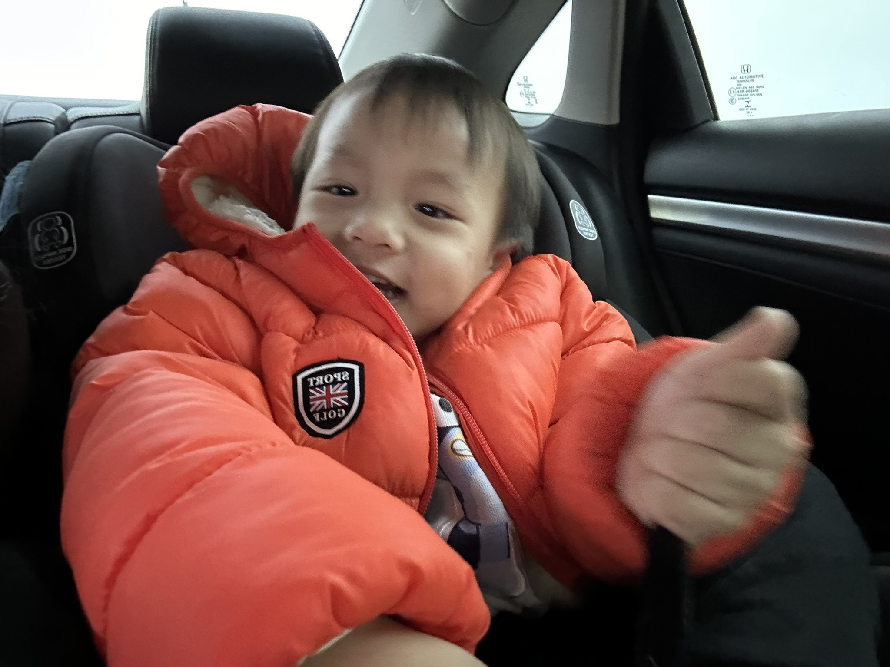

Hi, I'm Vanessa! I’m a third-year student at the University of California, San Diego, majoring in Chemistry with a minor in Data Science. I am currently a volunteer in Dr. Welsbie's lab, where I research proteins involved in the degradation of retinal ganglion cells in glaucoma, with a focus on developing new therapeutic strategies. After completing my undergraduate studies, I plan to attend dental school and pursue a career in dentistry.
